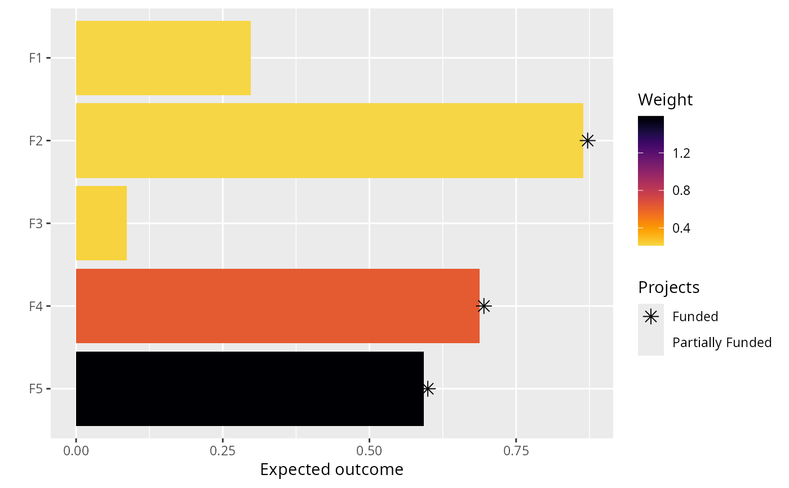
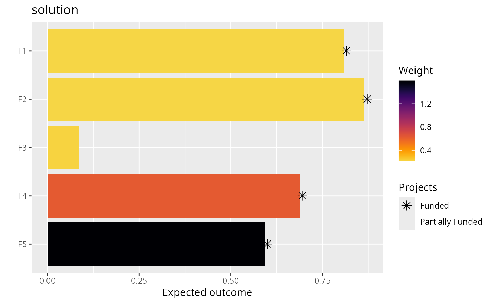

Plot a bar plot to visualize a project prioritization
Source:R/plot_solution_barplot.R
plot_solution_barplot.RdCreate a bar plot to visualize the expected outcome associated with each feature given the projects selected for funding by a solution.
Arguments
- x
problem()ormulti_problem()object.- solution
base::data.frame()ortibble::tibble()containing the solutions. Here, rows correspond to different solutions and columns correspond to different actions. Each column in the argument tosolutionshould be named according to a different action inx. Cell values indicate if an action is funded in a given solution or not, and should be either zero or one. Arguments tosolutioncan contain additional columns, though they will be ignored.- n
integersolution number to visualize. Since each row in the argument tosolutionscorresponds to a different solution, this argument should correspond to a row in the argument tosolutions. Defaults to 1.- symbol_hjust
numerichorizontal adjustment parameter to manually align the asterisks and dashes in the plot. Defaults to0.007. Increasing this parameter will shift the symbols further right. Please note that this parameter may require some tweaking to produce visually appealing publication quality plots.- return_data
logicalshould the underlying data used to create the plot be returned instead of the plot? Defaults toFALSE.
Value
A ggplot2::ggplot() object. If return_data = TRUE, then a data.frame
is returned.
Details
In this plot, each bar corresponds to a different feature. The length of each bar indicates the expected outcome for the a given feature (e.g., probability of persistence), and the color of each bar indicates the weight for a given feature. Features that directly benefit from at least a single completely funded project with a non-zero cost are depicted with an asterisk symbol. Additionally, features that indirectly benefit from funded projects – because they are associated with partially funded projects that have non-zero costs and share actions with at least one completely funded project – are depicted with an open circle symbol.
Examples
# set seed for reproducibility
set.seed(500)
# load the ggplot2 R package to customize plots
library(ggplot2)
# load data
data(sim_projects, sim_features, sim_actions)
# build problem
p <-
problem(
sim_projects, sim_actions, sim_features,
"name", "success", "name", "cost", "name"
) %>%
add_max_wtd_sum_objective(budget = 400) %>%
add_feature_weights("weight") %>%
add_binary_decisions() %>%
add_heuristic_solver(n = 10)
# solve problem
s <- solve(p)
# plot the first solution
plot(p, s)
 # plot the second solution
plot(p, s, n = 2)
# plot the second solution
plot(p, s, n = 2)

# since this function returns a ggplot2 plot object, we can customize the
# appearance of the plot using standard ggplot2 commands!
# for example, we can add a title
plot(p, s) + ggtitle("solution")

# we can also obtain the raw plotting data using return_data=TRUE
plot_data <- plot(p, s, return_data = TRUE)
print(plot_data)
#> # A tibble: 5 × 4
#> name outcome weight status
#> <fct> <dbl> <dbl> <fct>
#> 1 F5 0.592 1.59 Funded
#> 2 F4 0.688 0.630 Funded
#> 3 F3 0.0865 0.221 NA
#> 4 F2 0.865 0.211 Funded
#> 5 F1 0.808 0.211 Funded